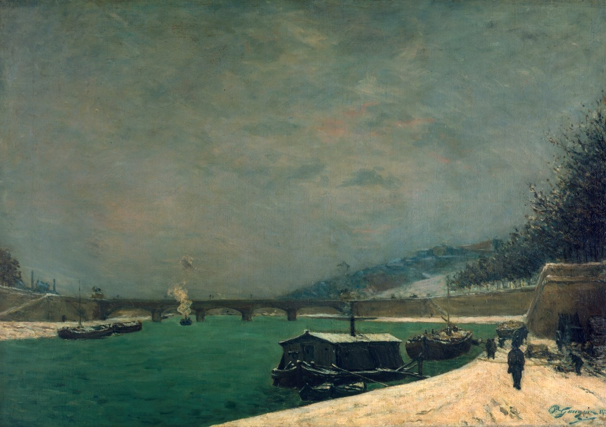

Opere più importanti di Paul Gaugin

Titolo: La Senna presso il ponte di Jena
Vai all'opera
Titolo: Nudo di donna che cuce
Vai all'operaTitolo: Sala in casa dell’artista
Vai all'operaTitolo: Da dove veniamo? Chi siamo? Dove andiamo?
Vai all'opera
Titolo: Il Cristo giallo
Vai all'opera
Titolo: Visione dopo il sermone
Vai all'opera
Titolo: Donne di Tahiti
Vai all'opera
Titolo: La Orana Maria
Vai all'opera
Titolo: Parau Api
Vai all'opera